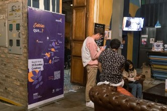
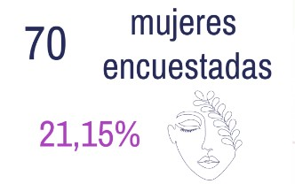
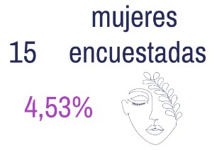

Índice
En el estudio diagnóstico de la situación económica y financiera de las mujeres que ejercen actividades productivas en los Distritos Creativos participaron:
Los distritos con mayor participación fueron:
Distrito Creativo La Candelaria- Santa fe
Feria Mentes sin Espacio- Distrito Creativo la Candelaria- Santa Fe
Distrito Creativo Chapinero
Festival VEAN - Distrito Creativo Chapinero
Distrito Creativo Teusaquillo
Lanzamiento Coffe Master 2022- Distrito Creativo Teusaquillo
Distrito Creativo Usaquén
Transformaciones Culturales para la paz
Distrito Creativo Fontibón
